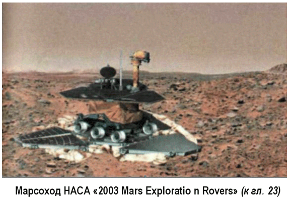
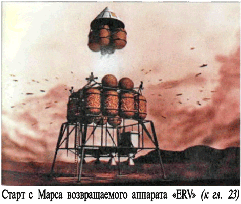
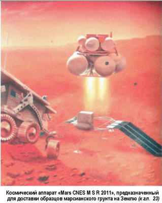

Колонизация Марса
В качестве дальней перспективы освоения Марса современные энтузиасты пилотируемой космонавтики рассматривают возможность его колонизации.
Однако, чтобы человек не чувствовал себя чужеродным объектом в холодном и пустом мире, Марс предлагается «терраформировать», то есть превратить его в некое подобие Земли — с пригодной для дыхания атмосферой, с реками и морями, с флорой и фауной. Тогда на Марсе можно будет построить не одну или две базы под герметичным куполом, а настоящие города на тысячи и сотни тысяч колонистов.
Экономическую отдачу от подобного предприятия пока еще никто не считал, но это не волнует сторонников идеи терраформирования Марса — они, подобно пионерам ракетостроения, говорят о том, что создание колоний на других планетах способствует выживанию человеческой расы в самом глобальном смысле, а ради этого никакие расходы не покажутся слишком большими.
Создавать «новую Землю» на Марсе «терраформисты» собираются в два этапа.
«Прежде всего, мы постараемся поднять среднюю температуру поверхности Марса с –60 °C до 0 °C, — говорит Крисе Маккей из Исследовательского центра имени Эймса, — это необходимо для того, чтобы вода на поверхности Марса могла существовать в жидком виде…»
Первый этап займет от 100 до 200 лет. За это время Марс должен стать более теплым и влажным, нежели сегодня.
Его атмосфера увеличится в объеме. Давление достигнет одной восьмой от земного.
После этого начнется второй этап, который, возможно, займет не менее 10 тысяч лет. За это время климат планеты должен приблизиться к земному.
Переделку климата красной планеты терраформисты хотят поручить микроорганизмам, которые, возможно, придется специально выводить на земных «фермах», а затем отправлять на Марс. Кроме того, на красной планете, возможно, построят несколько автоматических фабрик, которые станут вырабатывать из горных пород кислород, азот, углекислый газ и выпускать их в атмосферу. Работать они будут на электроэнергии, получаемой с помощью солнечных батарей или ядерных реакторов.
Двуокиси углерода или углекислого газа может понадобиться довольно много. Газ этот будет использован для создания парникового эффекта, а также для выработки кислорода с помощью микробов.
По расчетам специалистов, достаточно первоначально поднять температуру поверхности Марса всего лишь на 4 градуса, чтобы включился механизм парникового эффекта и дальнейшее повышение температуры происходило как бы само собой. Первоначальный же нагрев можно произвести, например, с помощью гигантских зеркал, которые будут собраны на околомарсианской орбите и направят свои солнечные зайчики на полярные шапки Марса. Под действием тепла шапки растают и пополнят запасы углекислого газа в атмосфере.
Когда давление на красной планете достигнет хотя бы 15 процентов от земного, колонисты смогут обходиться без скафандров, надевая лишь кислородные маски.
Пока этот проект еще очень далек от реализации. Но время идет, и возможно, мы доживем до начала глобального наступления на красную планету…


